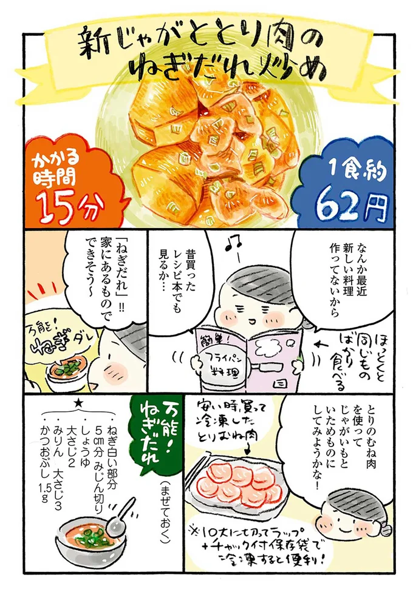

“一个人年收入200万日元的富裕生活”（Mariko Ozuz/KADOKAWA）第43期【共45次】
搬到东京10年后，年收入约200万日元的临时白领的作者，看到了“轻松、节俭的生活方式”，在自己的预算范围内过着自己的生活！每月预算为12万日元，伙食费为2万日元。结合时令食材和省时的食谱，在不过份的情况下制作出您自己的美食。“一个人年收入200万日元的富裕生活”《角川》是漫画家小沼真理子的漫画散文。热门系列第 1-3 卷“一个人每月2万日元的温暖时令蔬菜食谱”我们将提供精心挑选的剧集。
*本文摘自小丸子所著《年收入200万日元的单身人士的富裕生活》1-3和角川出版的《月食费2万日元的单身人士的温暖生活-时令蔬菜食谱》。
・本文是根据作者的实际经历撰写的文章。请注意，价格和产品详细信息是截至本文件发布之日的最新价格和产品详细信息，可能与当前价格有所不同。
・本文中提及的产品和服务的价格基本上都是不含税的价格。对于不明的项目，不包括“不含税”和“含税”。
